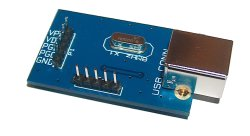
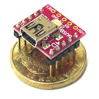
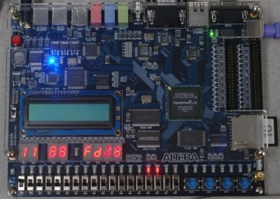

A weblog focused on interesting circuits, ideas, schematics and other information about microelectronics and microcontrollers.
E-books
Disclaimer
Because I have not tested all electronic circuits mentioned on this pages, I cannot attest to their accuracy; therefore, I do not provide a warranty of any kind and cannot be held responsible in any manner.
USBPicProg
25. June 2009 - 20:08 — adminUSBPicProg is a simple, open source USB in circuit programmer for Microchip PIC processors.

Bitlash
25. June 2009 - 18:38 — adminAn open source interpreted language shell for the Arduino serial port.

microUSB
23. June 2009 - 17:44 — adminA smart and small solution to connecting your devices with PC via USB.


BASIC for Atari 2600
20. June 2009 - 10:58 — adminSomething nostalgic again: Batari BASIC is a BASIC-like language for creating Atari 2600 games.
Apple II+ in FPGA
18. June 2009 - 17:44 — adminReconstructing the classical 80's computer with modern FPGA chip from Altera - Apple2fpga

PIC32 board
16. June 2009 - 21:50 — adminA PIC32 board, providing PIC32 pins in a DIP format, simplifying the development.
Twitter client for Commodore C64/128
16. June 2009 - 15:28 — adminBREADBOX64 is a twitter client for the C64/128. It uses Contiki and the MMC Replay cartridge with the RR-Net add on for the physical connection to the net.

AVR GameBoy
15. June 2009 - 18:53 — adminA simple handheld game console with two ATtiny26 and LCD graphic display module.
The JTAG Debugger Based on ATmega644
15. June 2009 - 6:36 — adminThis JTAG Debugger from the Cornell university is based on an ATmega644 and it’s capable of controlling program execution by setting breakpoints and accessing registers and memory.